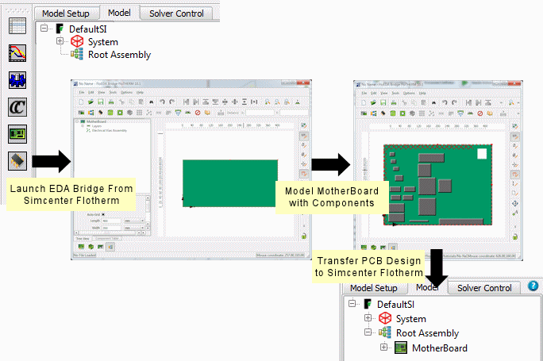

A high-level
procedure to give an overview of the process. You create the MotherBoard
in EDA Bridge (either manually,
or using file import) and then transfer it to Simcenter Flotherm.
Procedure
- Start EDA Bridge from Simcenter Flotherm.
- Model the PCB as a MotherBoard
design object.
- Save the MotherBoard in case
further changes are to be made to the design in EDA Bridge.
- Transfer
the MotherBoard from EDA Bridge to Simcenter Flotherm.
Results
The MotherBoard is created as an EDA Board
SmartPart in Simcenter Flotherm.
Figure 1. EDA Bridge Process Flow